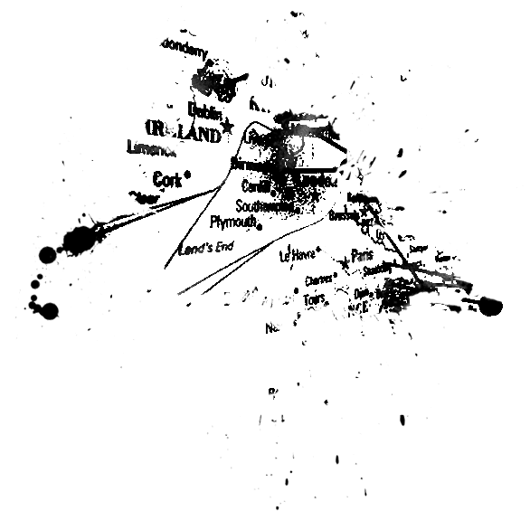

1954
Mannen en drugs, maar vooral een carriere om u tegen te zeggen
In deze periode was Nico vooral bezig met acteren en modelleren. Zo werd ze van haar 16 al ontdekt fotograaf Herbert Tobias. Hij was ook de man die haar de bijnaam Nico gaf, deze kwam van haar ex geliefde Nikos Papatakis.
Op haar 17 jaar kreeg ze al een contract bij Coco Chanel om hun producten te promoten. Maar die job heeft niet lang stand gehouden doordat ze naar New York is gevlucht. Door haar vele reizen deed ze ook veel talenkennis op, zo kon ze Engels, Spaans en Frans praten.
1954
“It is better to be addicted to opium than to be addicted to money.”
Na ze haar tijd opsplitste tussen Parijs en New York kreeg ze de hoofdrol in Strip-Tease (1963). Ze nam er ook de title track van op maar deze werd pas gereleased in 2001.
In 1962 kreeg ze een kind van Alain Delon. Deze Franse acteur en zakenman die heeft een kortstondige affaire met Nico gehad. Uit deze affaire kwam er zelfs een kind genaamd Christian Aaron. Nico noemde hem Ari, hij werd vooral opgevoed door de ouders van Delon hoewel Alain Delon zelf zijn vaderschap van het kind ontkende. Later werd haar zoon ook geadopteerd door Alain’s ouders en kreeg hij de naam “Boulogne”.
Haar allereerste muzikale optreden was in 1963 in New York’s Blue Angel nightclub.
1965
In 1965 leerde ze Brian Jones kennen en nam ze haar eerste single op. Deze werd geproduced door Jimmy Page. In diezelfde zomer heeft ze ook Bob Dylan leren kennen. Haar eersta album Chelsea Girl had het lied “I’ll keep it with mine” dat eigenlijk geschreven werd door Dylan voor Judy Collins.
Nadat ze Brian Jones had leren kennen begon ze samen te werken met Andy Warhol en Paul Morrissey om experimentele films te maken. Enkele van deze films waren “Chelsea Girls”, “The Closet” en “Imitation of Christ”.
Warhol is ook de manager van The Velvet Undeground geweest en het was ook hij die voorstelde om Nico als “chanteuse” aan te nemen. Het werd aarzelend aanvaard. Dit kwam door zowel persoonlijke als muzikale redenen. Hierna werd de groep het centerstuk van een multimedia performance met muziek, licht en dans. Ze zong 3 lead vocals bij 3 liedjes en was backing vocal van 1. Hun samenwerking werd gekenmerkt door veel moeilijkheden zo zei *John Cale* dat Nico te lang bezig was met voorbereidingen in de kleedkamer en dat haar rituelen de optredens ophielden wat vooral Lou Reed erg irriteerde.
Doordat ze doof was langs 1 kant zong ze soms een beetje off key, hierdoor werd ze soms wel wat uitgelachen door had band leden. Het album samen werd wel een klassieker later ook al werd het slecht onthaalt bij de release.
Going solo
1967
Onmiddelijk na haar werk met The Velvet Underground begon ze als solo artiest waarbij ze regelmatig in “The Dom” in New York optrad. Ze werd omringd door een steeds veranderende groep gitaristen (al dan niet met mensen van The Velvet Underground).
Voor haar debuut album had ze liedjes met Bob Dylan, Tim Hardin, Jackson Browne. Ook hebben Lou Reed, John Cale en Sterling Morrison meegeholpen aan het album. Zo hebben Nico en Cale samen het lied “It was a pleasure then” geschreven.
Bij de productie van het album had Nico niet erg veel te zeggen. Ze was dan ook niet tevreden met het resultaat. Een quote van haar uit 1981 zegt:”I still cannot listen to it, because everything I wanted for that record, they took it away. I asked for drums, they said no. I asked for more guitars, they said no. And I asked for simplicity, and they covered it in flutes! ... They added strings, and— I didn't like them, but I could live with them. But the flute! The first time I heard the album, I cried and it was all because of the flute.”
1970
In het begin van de 70’s begon ze terug aan live performances. Ze trad op in Amsterdam alsook in London waar ze zelfs samen met John Cale opende voor Pink Floyd. Er heeft ook een eenmalige reunie plaatsgevonden tussen Nico, Cale en Lou Reed in de Bataclan in Parijs.
In de 70’s heeft ze nog 2 meer solo albums uitgebracht namelijk “Desertshore” en “The End”. Ze schreef de muziek, zang en speelde het harmonium. Cale deed de meeste van de andere instrumenten. In “The End” speelde Brian Eno op de synthesizer en Phil Manzanera op de gitaar.
Het album “June 1, 1974” was het resultaat van een concert dat had plaatsgevonden waarin ze samen met Cale, Eno en Kevin Ayers gespeeld heeft in London.
Tussen 1970 en 1979 heeft ze samen met filmdirector Philippe Garrel nog ongeveer 7 films gemaakt. Ze heeft Garrel leren kennen in 1969 ze heeft dan ook bijgedragen aan “The Falconer” dat een lied uit de film “Le Lit de la Vierge” is. Ze heeft kort erna ook samen gewoond met Garrel.
1974
Rond 1974 werd ze betrokken bij Lutz Ulbrich. Deze was een gitarist voor Ash Ra Tempel. Voor de rest van het decennium zou hij haar begeleiden bij veel van haar concerten. Het ook rond deze periode dat ze haar haar terug bruin liet worden en dat ze vooral zwart droeg. Dit werd haar publieke beeld vanaf dan.
Ze heeft een tijdje ook getourd met “Siouxsie and the Banshees” een van de vele post-punk bands die Nico admireerden. Ook waren er fans vanuit bekende hoek. Zo was er John Lydon (Sex Pistols), Dave Vanian (the Damned) en Tommy Gear (the Screamers).
In 1979 had ze haar comeback concert in New York (vergezeld door Cale en Ulbrich). Dit werd positief onthaald door The New York Times. Ze begon regelmatig te spelen in allerlei venues met Jim Tisdall die haar vergezeld op de harp en gittler gitaar. Zo hebben ze samen op een uitverkochte 12 steden toer gespeeld.
In 1981 werd Nico vaak gezien als invloed voor de gothic rock scene geadmireerd door artiesten als Peter Murphy van Bauhaus alsook door Siouxie Sioux van Siouxsie and The Banshees.
Haar finale solo album heeft ze opgenomen in 1985 dit album heet “Camera Obscura”.
Albums
The Velvet Underground & Nico
1967
The Velvet Underground & Nico is het debuutalbum van de Amerikaanse experimentele rockgroep The Velvet Underground, in samenwerking met de Duitse zangeres Nico. Het album werd op 12 maart 1967 uitgegeven door Verve Records.
Camera Obscura
1985
Camera Obscura is the zesde solo album and zevende studio album, nico heeft de hulp gehad van amerikaanse punk band “the Faction”. Het album is geproduced geweest door John Cale. Dit album is 3 jaar voor haar dood uitgebracht, waarmee dit ook haar laatste was.
Drama of Exile
1981
Ze had twee verschillende versies en werd in eerste instantie opgenomen in 1981. Het album heeft een gecompliceerde release geschiedenis, de eerste release, werd oorspronkelijk opgenomen in april en mei 1981, terwijl de tweede release, een herwerking van de eerste is.
The End...
1973
The End ... is het vijfde studioalbum van de Duitse muzikante Nico. Het werd opgenomen in 1973 en geproduceerd door John Cale. Het werd uitgebracht in november 1974 op platenlabel Island.
Desertshore
1970
Desertshore is het derde album van Nico. Het album werd geproduceerd door John Cale en Joe Boyd. Buiten de trompet bespeelde John Cale ook alle instrumenten. Het werd in 1970 uitgebracht.
The Marble Index

1969
The Marble Index is het tweede solo album en derde studio-album van Nico, het werd uitgebracht in november 1968 op Elektra Records. De stijl die geïntroduceerd in het album werd had een groot contrast met haar folk pop debuut album: Chelsea Girl
Chelsea Girl
1968
Chelsea Girl is het debuut solo album van haar. Het werd uitgebracht door Verve Records, wat ook de thuisbasis van de Velvet Underground was. De naam van het album is een verwijzing naar Andy Warhol’s film, Chelsea Girls. Waarin Nico zelf speelde.
June 1, 1974
1974
June 1, 1974 is het zesde album van de Britse progressieve rock musicus Kevin Ayers. Het is de weergave van een live concert dat Ayers samen met John Cale, Eno, en Nico gegeven heeft op 1 juni 1974 in het Rainbow Theatre in Londen
Conclusie
Kort en bondig kan je het leven van Nico niet noemen. Een levensgenieter, een ontdekker, een junkie maar ook een moeder (al was ze dat niet erg overtuigend). Wanneer je alles op een rijtje zet zou men al eens kunnen versteld staan over wat Nico of beter gezegd Christa Paffgen allemaal heeft verwezenlijkt. Ze had haar ups en downs, haar betere kanten en slechtere kanten. Maar zelfs na tegenslagen als haar verkrachting toen ze 15 was hielden haar niet tegen om amper een jaar later al als model aan de slag te gaan. Niet veel later kwam er ook acteerwerk bij en tot slot ook nog eens muziek.
Doorheen haar hele carrière kwam ze heel wat mannen tegen die haar hebben bijgestaan, liefgehad of bedrogen maar zelf kwam ze er altijd sterker uit. Een ware femme fatale die geen man nodig had om gelukkig te zijn maar liever vogelvrij doorheen het leven ging. Jammer genoeg heeft een heroïneverslaving haar af en toe in de weg gezeten en is ze ook nog eens veel te vroeg van ons heengegaan in een ongelukkig ongeval met haar fiets. Ze kreeg door een val hiermee een hersenbloeding die haar fataal is geworden.
Ook na haar dood bleef Nico tot de verbeelding spreken. Vele live-albums verschenen op evenzoveel verschillende labels. James Young, lid van The Faction tijdens de laatste zes jaar van Nico's leven, beschreef in 1992 zijn herinneringen aan deze tijd in “Songs they never play on the radio”. Een jaar later verscheen een volledige biografie, “Nico. The life and lies of an icon” van Richard Witts. In 1995 verscheen “Nico Icon”, een documentaire van de Duitse televisie over Nico's leven. In 1997 maakte choreograaf Ed Wubbe de dansvoorstelling Nico voor Scapino Ballet waarvoor John Cale de muziek schreef. In 2014 liet Wubbe zich opnieuw inspireren door Nico en de Velvet Underground voor zijn choreografie “ICON/NICO".
Bij deze weet je alles wat er te weten valt over hoe Nico haar carrière is tot stand gekomen en hoe het van onschuldig en jong naar grauwer en donkerder ging. Begonnen als model, geëindigd als gothic rock icoon. Een vrouw van vele talenten en facetten die tot op de dag van vandaag even mysterieus als interessant blijft net als de mannen waarmee ze maar al te vaak omringt werd.